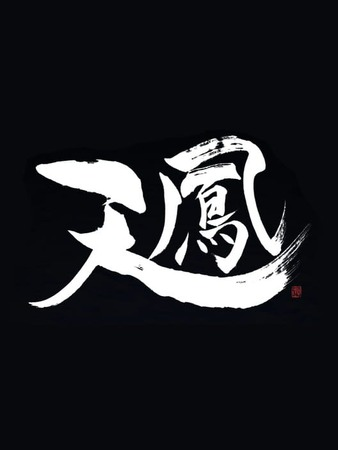

Tenhou (天鳳) é uma das plataformas de riichi mahjong online mais populares no Japão, apesar de também ser utilizada em todo o mundo. O jogo é oferecido por meio de uma plataforma web e de um programa para download, sendo que o último necessita que o utilizador pague mensalmente para ter acesso ao mesmo(isto não afeta de modo nenhum o jogo em si). O site em si possui uma tradução limitada para o inglês , mas existem extensões de browser onde a traduçao do site para inglês(entre outras línguas) é praticamente integral.
O riichi mahjong é a versão japonesa do mahjong, um jogo de tabuleiro para 3 a 4 jogadores onde estes irão tentar fazer mãos vencedoras de 14 peças que lhes atribuem pontos e onde o jogador com mais pontos no final da partida ganha.A versão japonesa difere das outras, entre outras coisas, no uso do riichi, dora e furiten que são regras que permitem ao jogador ganhar mais pontos (de maneiras diferentes) e não poder ganhar a partir de peças que já descartou, respetivamente.
O sistema de classificação utiliza uma escala de pontuação, com dois tipos distintos de classificação: Rank (Posição): Aumenta ao conquistar o 1º ou 2º lugar e diminui ao ficar em 4º lugar. A cada aumento no rank,a penalidade aplicada ao 4º lugar torna-se maior. Rating (R): Baseado no sistema Elo — aumenta com vitórias e diminui com derrotas, levando em consideração o Rating (R) dos outros jogadores (ganha-se mais pontos, ou perde-se menos, ao enfrentar oponentes com um Rating mais elevado). Enquanto o Rating apenas é associado a um número que afeta , por exemplo, que tipo de salas(destinadas a jogadores iniciantes, intermédios e avançados)o jogador pode jogar, o rank de um jogador é associado também a um dan ou kyu sendo que o rank mais baixo corresponde ao Rookie(um abaixo do 9ºkyu) enquanto o mais alto corresponde ao Tenhoi (um acima do 10º Dan). Este é organizado como na tabela seguinte(serve apenas de exemplo visto que apenas exemplifica o sistema utilizando os três ranks mais altos, ignorando o mais alto):